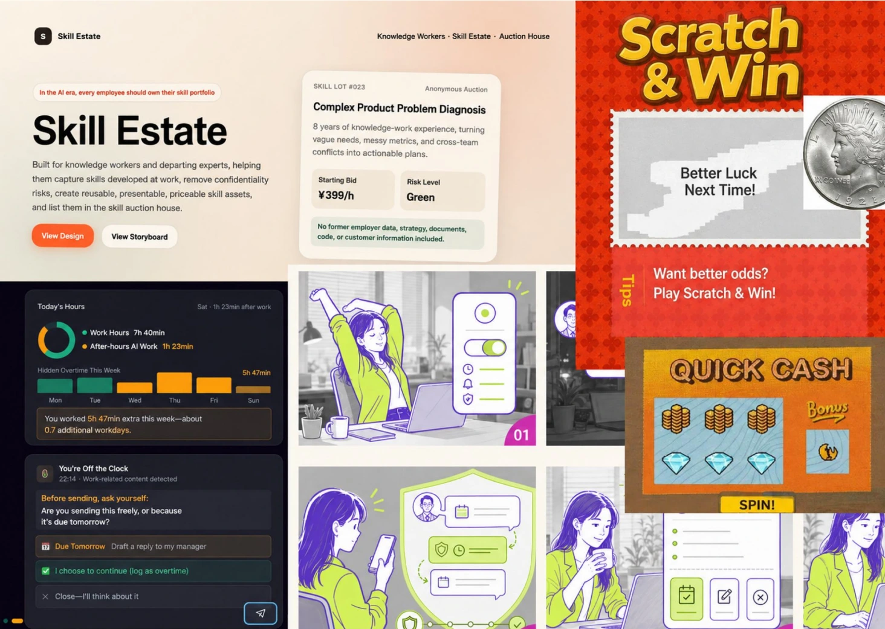
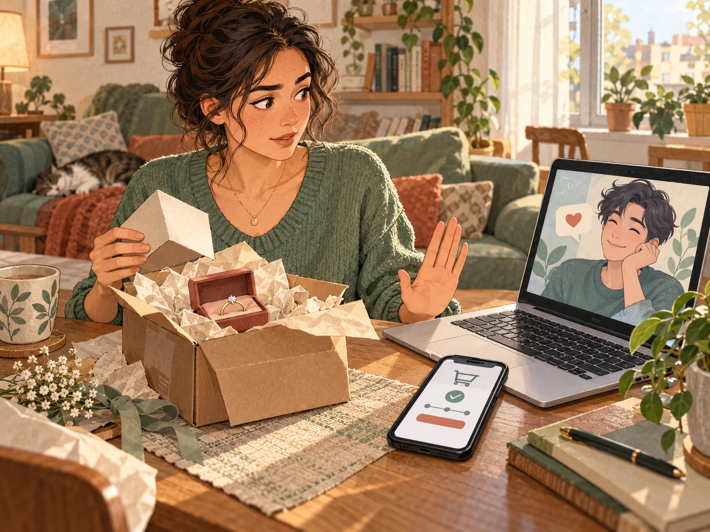
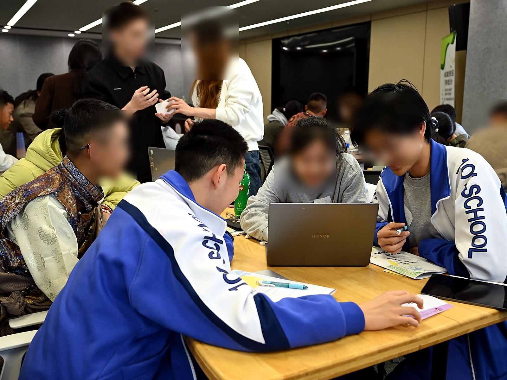
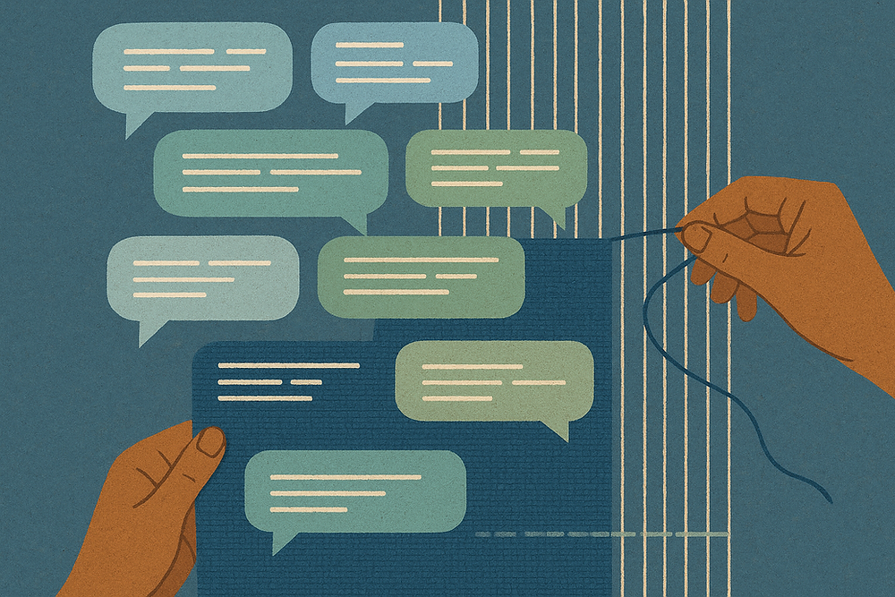
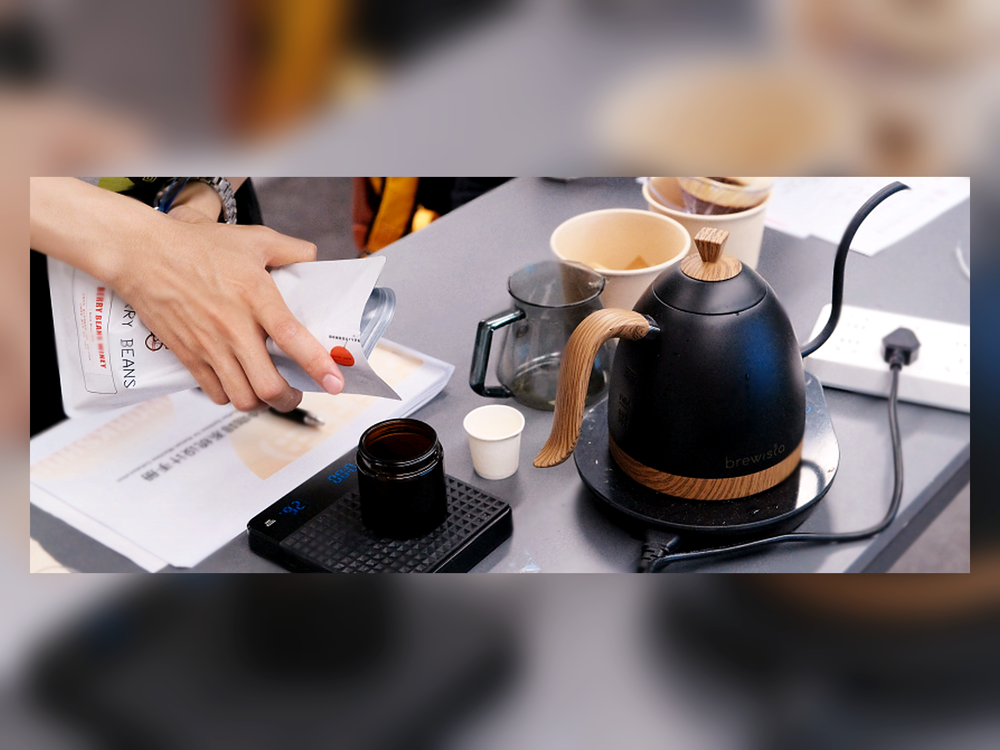
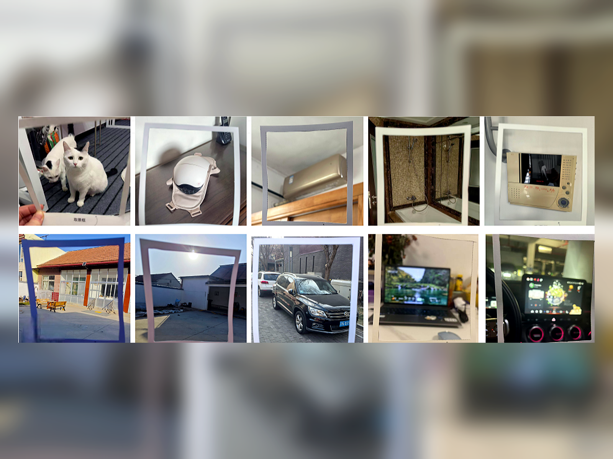
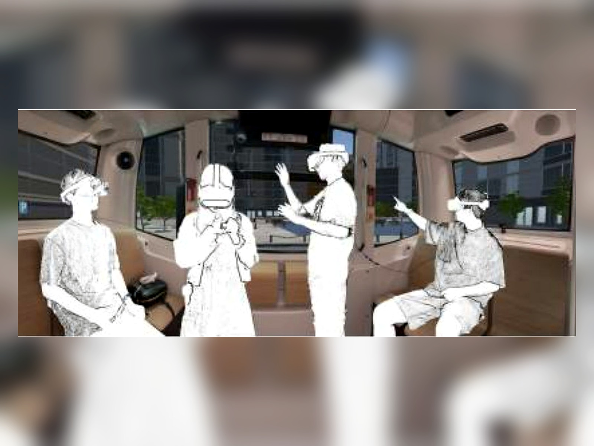
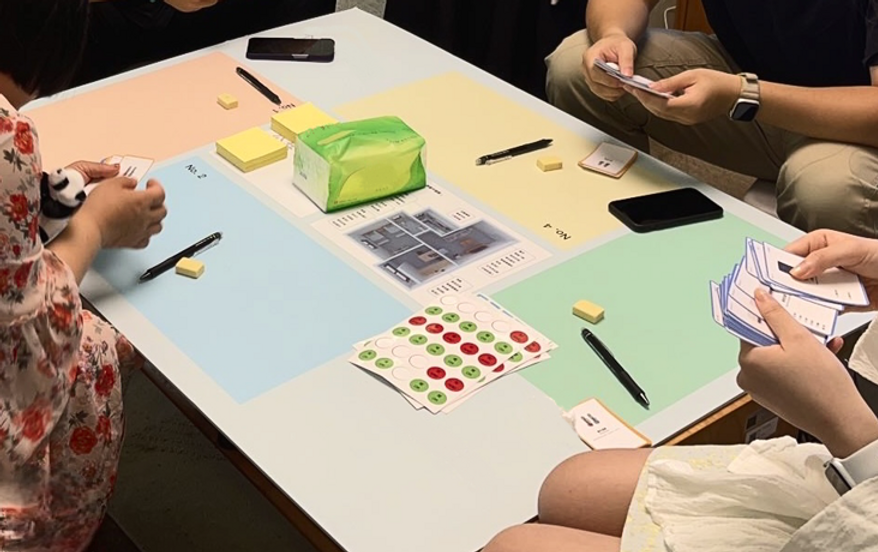
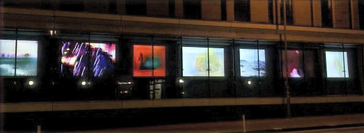
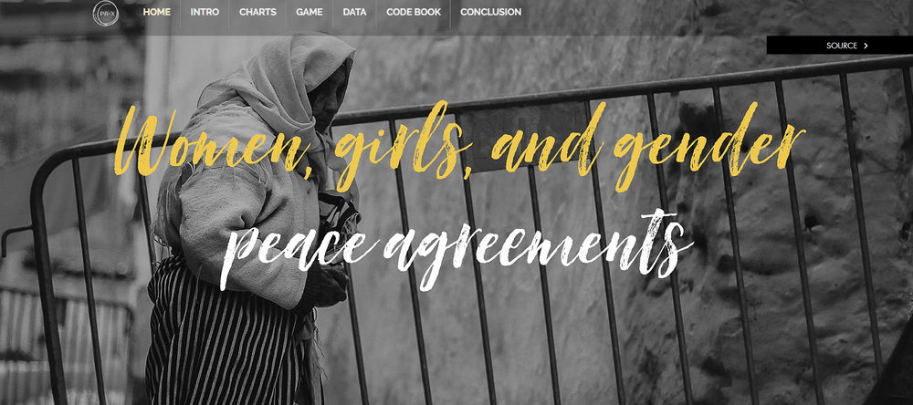

Academic projects
Details of my academic projects, including ongoing work, completed studies, and published research.

Knowledge Workers and Workplace GenAICo-speculating support for workers when their interests and organizational demands diverge.

User-defined Protection in Romantic AIEnacting and co-designing security, safety, and privacy with romantic AI users.

Participation around GenAI in Group LearningCollaboration and participation around shared GenAI with students from Beijing and Tibet.

Design-in-Use with Commercial LLMsHow non-AI experts shape commercial LLMs through everyday use.

Configuring Participants as Covert EvaluatorsQuestioning interpretive authority in technology design.

When My Car Whispers Secrets to My HomeSpeculating about connected cars, homes, and lives in-between.

Beyond DrivingEnvisioning activities in future autonomous vehicles through experience-centered design.
Hear Us, then Protect UsExploring older adults’ expectations of deepfake safeguards and tensions between protection and autonomy.

Who Should Hold Control?Uncovering power in smart homes.
Qinqiang Opera, Xi'an Locals, and New Media ArtA participatory exploration of folk culture.

Ballads IllusionEnhancing British ballads with human-AI collaboration.

Women and Peace Glimpsed from DataA data visualization project based on peace agreement data.